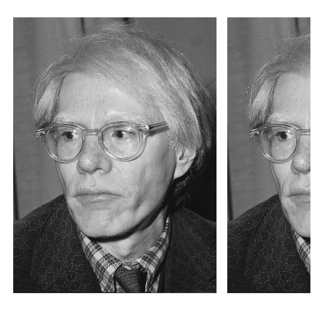
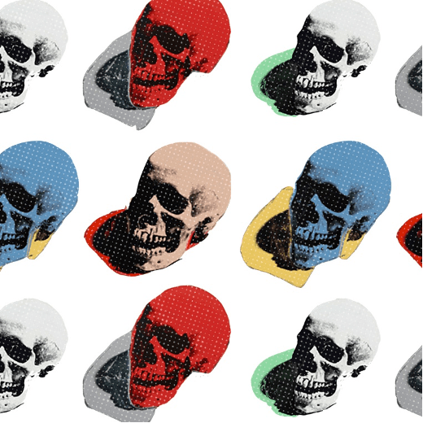
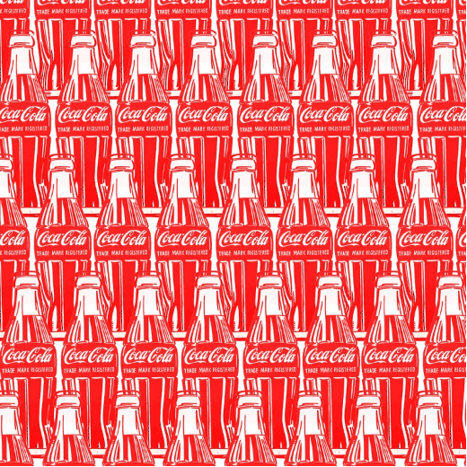
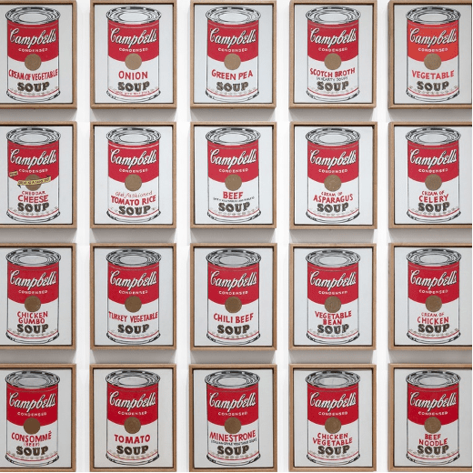

Feature
Pioneers from the past – Andy Warhol
Andy Warhol was an American artist, filmdirector, and producer who was a leading figure in the visual art movementknown as pop art.
By : Aditya Sangal | 12 November 2020

In college, warhol developed a blotted line technique that combined drawing with basic printmaking. Blotted line allowed him to create a variety of illustrations using the same intial pattern. Blotted line combines drawing with basic printmaking. Warhol began by copying a line drawing in pencil on a piece of non-absorbent paper, such as tracing paper. Next, he hinged this piece of paper to a second sheet of more absorbent paper by taping their edges together on one side. With a fountain pen, Warhol inked over a small section of the drawn lines. He then transferred the ink onto the second sheet by folding along the hinge and lightly pressing or “blotting” the two papers together. The process resulted in the dotted, broken, and delicate lines that are characteristic of Warhol’s illustrations. Warhol often coloured his blotted line drawings with watercolour dyes or applied gold leaf.

In 1960, Warhol turned his attention to the pop art movement, which began in Britain in the mid -1950s.Everyday life inspired pop artists and their source material became mass produced products and commercial artefacts of daily life, commercial products.

Reflecting on his career, Warhol claimed that the Campbell’s soup can was his favourite work and that “I should have just done the Campbell’s soups and kept on doing them… because everyone only does one painting anyways.”

Andy Warhol’s work is still argued over decades later, does he genuinely deserve our praise for his thought provoking art or is he just another slick businessman who fooled millions, let us know what you think. For more visit our page –
Instagram/pixelatevit.